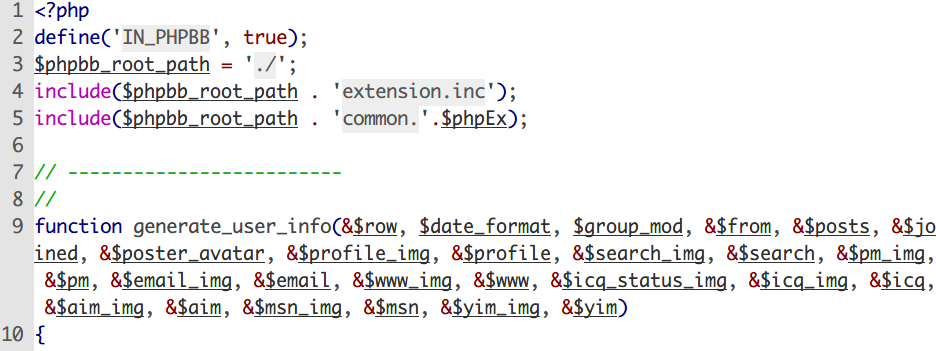
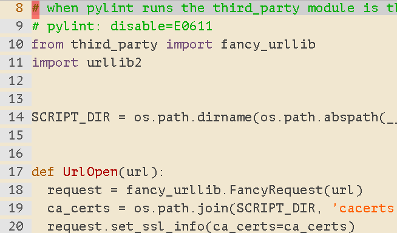
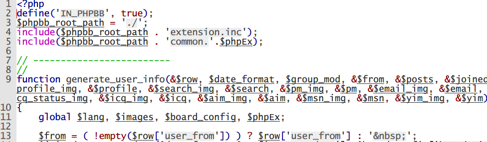
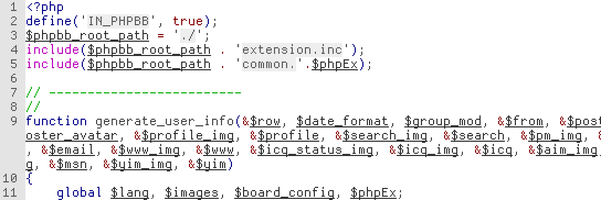
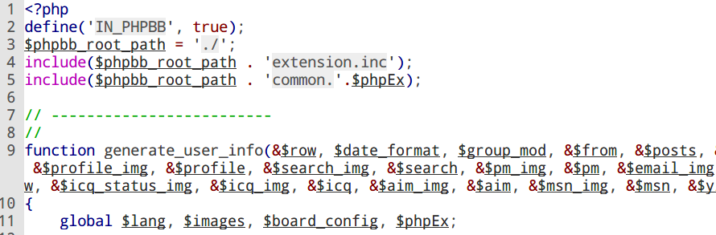

身為一個軟體工程師，每天都要面對幾萬行的程式碼，如果面對不易閱讀的字體，眼睛很快就會累了，這裡提供一些不錯的字型提供參考。
| font | Letters |
|---|---|
| PT Mono | 0123456789 abcdefghijklmnopqrstuvwxyz ABCDEFGHIJKLMNOPQRSTUVWXYZ 0oO 1iI lL @#$%^&*()[]{} |
| SF Mono | 0123456789 abcdefghijklmnopqrstuvwxyz ABCDEFGHIJKLMNOPQRSTUVWXYZ 0oO 1iI lL @#$%^&*()[]{} |
| IBM Plex Mono | 0123456789 abcdefghijklmnopqrstuvwxyz ABCDEFGHIJKLMNOPQRSTUVWXYZ 0oO 1iI lL @#$%^&*()[]{} |
| Monaco | 0123456789 abcdefghijklmnopqrstuvwxyz ABCDEFGHIJKLMNOPQRSTUVWXYZ 0oO 1iI lL @#$%^&*()[]{} |
| Noto Mono | 0123456789 abcdefghijklmnopqrstuvwxyz ABCDEFGHIJKLMNOPQRSTUVWXYZ 0oO 1iI lL @#$%^&*()[]{} |
如果你想要找字型，可以從 google fonts 找到不少實用的字型。
Monaco
這是 Mac 預設 Terminal 用的字體，每個字體都有圓角，非常好看。
PT mono
這是我目前最愛的字型，跟 Monaco 最大的差別是 a 這個字，我比較喜歡 a 這個字母上面是有凸出的，而不是圓頭， PT mono 系列的字體看起來比較可愛，平常看程式可以稱比較久。
PT-mono example
ijkl 1230 abcoO William Shakespeare (/ˈʃeɪkspɪər/; 26 April 1564 (baptised) – 23 April 1616)[a] was an English poet, playwright and actor, widely regarded as the greatest writer in the English language and the world's pre-eminent dramatist.[2][3][4] He is often called England's national poet and the
IBM Plex Mono
ijkl 1230 abcoO William Shakespeare (/ˈʃeɪkspɪər/; 26 April 1564 (baptised) – 23 April 1616)[a] was an English poet, playwright and actor, widely regarded as the greatest writer in the English language and the world's pre-eminent dramatist.[2][3][4] He is often called England's national poet and the
Apple SF Mono
ijkl 1230 abcoO William Shakespeare (/ˈʃeɪkspɪər/; 26 April 1564 (baptised) – 23 April 1616)[a] was an English poet, playwright and actor, widely regarded as the greatest writer in the English language and the world's pre-eminent dramatist.[2][3][4] He is often called England's national poet and the
Lucida Console
Dina
Droid Sans Mono Custom
Crimson
- 每個字母的長度不同。
由於 Putty 只支援使用字母寬度一樣的字體，所以有些字體就沒辦法使用了，使用 notepad++ 就沒這個問題。